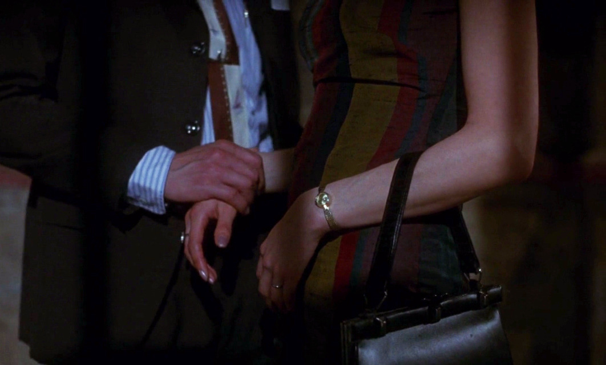

Touch the Naked Heart of the Other
by Eddy
Hand-holding is ostensibly the most uncool part about erotics, the 80s indie rock equivalent of Daniel Johnston, so to speak. Where the far cooler kids wear Unknown Pleasure or Washing Machine t-shirts, the shy, twee hand-holder gowns a Hi How Are You t-shirt. And it goes without saying that there is a plethora of far sexier things one does with their hands. But that doesn’t stop me from standing up this metaphorical podium to proclaim that, like Daniel Johnston, hand-holding has not received the palmy treatment it deserves in the history of Eros.
Guitaut Riquier, considered by some to be the last of the troubadours, has described love as having five doors: “Desire, Prayer, Service, Kissing, and Doing.” All five of these doors have been written on extensively—but hand-holding?
I can’t remember my first OOF (Out of Family) hand-holding experience—not with the same clarity as my first kiss. Kissing, and the things after kissing are elevated in the mambo of Eros—but, somehow, my hand-holds have drilled themselves in me and penetrated my insides far deeper than many of my kisses. I can’t remember if my first OOF hand-holding experience was with a man or a woman. What I can remember, is, that hand-holding is the prime mover in my Terpsichore of Eros—my love begins with hand-holding. Love starts with a touch. It starts with that first nervous hand—and boy do my palms get sweaty—that extends outwards into the Other’s hand. Hand-holding is the first moment of reaching outside of yourself into the world of another person—it is Eros.
A recent encounter: not too recent, but not in my childhood. I hoped to find some childhood memory which could explain my relationship with hand-holding (early drafts have included an onto-theological analysis of how hand-holding was a replication of prayer where prayer is a type of hand-holding with God), but my memory has turned out empty handed. I can only chalk it up to a combination of twee-pop (Belle and Sebastian have far too much sway in my psycho-sexual development), slice-of-life anime and subliminal messaging in rock music (here, I believe I Want to Hold Your Hand by the Beatles might have been the object root of my desire).
But: well—there is a person—let’s call her A.—after Albertine in that Proust novel. We were walking to a diner, not out of hungry, more so to justify spending more time together. It was late, so late that the streets were empty of the night crowd’s chatter. It was raining, so we shared an umbrella, which meant we were linking arms. The rain was airy, and it bounced on the sidewalks, so small puddles gleaned from the pavement. As we walked, we could see the city lights in the puddles, and it felt like we were jumping over stars. The lights were like stars, but they were also like fire flies and sea sparkle and it was like the city was part of nature and we could hear the faint songs of birds beginning to wake up. It was spring but it was about to turn to summer, and the flowers were just about to blossom, which you could feel in the dark. We felt our feet on the wet ground and felt our shoes occasionally touching one another and it was a little hard to breathe—actually it was a lot hard to breathe, and so I couldn’t breathe so I turned to A. and A. couldn’t breathe so she turned to me and we looked at each other and there was some night dust in our eyes and the light from the street light twinkled in her eyes and our hearts pumped through our chests and—our lips never touched, but our hands did and that was enough— I reached out to her hand, or did she reach out to mines? memory fails me once again, but our hands eloped and I made a soft squeal and that reach outwards, that held hand was enough to transformed desire into sensuality, to break down the barriers of love and lust.
Yes—it was truly the moment when the walls of Jericho fell down. Holding one’s hand is the first point of contact one has with the Other’s naked body. We often clothe ourselves from the Other, but our heart leaps out of us when our brushes turn to grips—to hold hands is to become part of the flow of the history of Eros—it is to channel the energy of every nude ever painted, every love song ever strummed—it is the point of encountering someone else in their stark nakedness, in their curves, their joints, and their trembles. We read our fortunes in our palms and when our hands come together, we fuse our futures into one.
Now, I have to say upfront that I don’t have a hand fetish. I do not want to banish hand-holding into the realm of fetishism—instead, I wish to defend a universal aspect to hand-holding, which sets it apart from other expressions of Eros. My experience of kisses (and further) have been tongue-tied by a structure of heteronormativity. Once kissing is introduced, my future relations are constrained by the “Norm” which I have to follow through on—but hand-holding is distinguished by its plasticity, its indeterminate openness, its fidgeting of social moorings. My hand-holds can be innocent in ways my kiss can’t be—hand-holds are emptied out of pre-determined meaning, they becomes the lacuna in the structure of love—they are the site of endless possibility, an affirmation of a full orbital love, a love that contains agape, philia and eros linked together in a circle, holding hands. There are plenty of people I fantasize holding hands with, but the nature of this fantasy is more open than other erotic fantasies. I hold hands with friends as well as lovers, producing an open palm policy that symbolizes Eros as an active process, always present in my interactions.
And that was what characterized these four months of hand flirting I had with A. Her skin was made of silk that wrapped around my hand, pulling me in and drawing me closer and closer into desire. The contours of her hands were smooth. I would tremble at the way her fingertips sketched histories onto mines. We regularly held hands for months before words or kisses entered the picture. We’ve developed a secret language of hand-holds. The language of love is always being rewritten, always subject to the shifting constitution of its speakers. Love has no preconceived notion of what love is, but is made anew in every new love. Precisely in this way, I can say that act of hand-holding became the seed of my love. Hand-holding became the gesture that satisfied my body’s craving for intimacy.
The idiom: to reach out means to make the first point of contact. To hold hands is to reach out to Eros. My grip, which has been restrained to my own totality for so long has been shattered by love’s first touch: my body sings electric (electricity passes through our fingertips)—lathering the Other with palmy sweat (sweat, the cousin of tears). Starting all with a T-o-u-c-h—one hand, five fingers, five letters, tasting the trace of the beloved in the n-a-k-e-d palms of their hands. Ten fingers, two hands, brought me to the h-e-a-r-t—exposed, stripped of its clothing, the heart thumped quickly as we held hands. With twenty fingers, four words, each five letters, and two hands, held together, I had entered, naked, into the O-t-h-e-r, to become a lover, to hold their hands, to Touch the Naked Heart of the Other.
